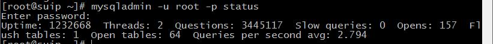

20 команд MySQL (mysqladmin) для администратора базы данных в Linux
Alexey 26.12.2016 0 Веб-сервер MariaDB, MySQL, mysqladmin
mysqladmin – это утилита командной строки, которая поставляется с MySQL сервером и используется администраторами баз данных для выполнения некоторых простых MySQL задач, таких как установка пароля root или другого пользователя, изменение пароля root или другого пользователя, мониторинг процессов mysql, перезагрузка привилегий, проверка статуса сервера и т.д.
В этой статье собраны некоторые очень полезные команды mysqladmin, которые используется системными администраторами и администраторами баз данных в их повседневной работе. У вас уже должен быть установлен MySQL сервер, чтобы вы могли повторить эти примеры.
1. Как установить пароль MySQL Root?
Если у вас свежая установка MySQL сервера, то она не требует какого-либо пароля для подключения в качестве пользователя root. Для установки в MySQL пароля root пользователя используйте следующую команду:
|
mysqladmin -u root password ВАШ_НОВЫЙ_ПАРОЛЬ |
2. Как изменить пароль MySQL Root?
Если вы хотите изменить или обновить пароль от root в MySQL, то вам нужно напечатать следующую команду. Допустим, ваш старый пароль это 123456, и вы хотите изменить его на новый пароль xyz123:
|
mysqladmin -u root -p123456 password 'xyz123' |
Аналогично операция выполняется для других пользователей, вместо root вставьте имя пользователя, для которого вы хотите изменить пароль
3. Как проверить, запущен ли MySQL сервер?
Чтобы узнать, работает ли MySQL сервер, используйте следующую команду:
|
mysqladmin -u root -p ping |
4. Как проверить, какую версию MySQL я использую?
Следующая команда покажет версию MySQL, а также текущий статус работы:
|
mysqladmin -u root -p version |
5. Как узнать текущий статус MySQL сервера?
Для определения статуса MySQL сервера используйте следующую команду. Mysqladmin покажет время работы с запущенными патоками и очередями.
|
mysqladmin -u root -p status |

6. Как проверить статус всех переменных и значений MySQL сервера?
Для проверки всех переменных и значений работающего MySQL сервера напечатайте следующую команду. Вывод должен быть примерно таким:
|
mysqladmin -u root -p extended-status |
7. Как посмотреть все переменные и значения MySQL статуса?
Для просмотра всех переменных и значений запущенного MySQL сервера, используйте команду, как показано ниже:
|
mysqladmin -u root -p variables |
8. Как проверить все процессы рабочего MySQL сервера?
Следующая команда отобразить все запущенные процессы запросов к базе данных MySQL:
|
mysqladmin -u root -p processlist |
9. Как создать базу данных на MySQL сервере?
Для создания новой команды на MySQL сервере используйте команду, которая показана ниже:
|
mysqladmin -u root -p create имя_баы_данных |
10. Как удалить базу данных на MySQL сервере?
Для удаления базы данных с MySQL сервера используйте следующую команду. Для подтверждения нажмите ‘y‘.
|
mysqladmin -u root -p drop имя_баы_данных |
11. Как перезагрузить/сбросить привилегии MySQL?
Команда reload говорит серверу повторно загрузить таблицы grant. Команда refresh сбрасывает все таблицы и повторно открывает файлы журналов.
|
2 |
mysqladmin -u root -p reload; mysqladmin -u root -p refresh; |
12. Как безопасно выключить MySQL сервер?
Для безопасного выключения MySQL сервера используйте следующую команду:
|
mysqladmin -u root -p shutdown |
Вы также можете использовать следующие команды для запуска, остановки MySQL сервера:
|
2 |
sudo systemctl stop mysql.service sudo systemctl start mysql.service |
13. Некоторые полезные команды MySQL Flush
Ниже несколько полезных flush команд с описанием.
|
2 3 4 5 6 |
mysqladmin -u root -p flush-hosts mysqladmin -u root -p flush-tables mysqladmin -u root -p flush-threads mysqladmin -u root -p flush-logs mysqladmin -u root -p flush-privileges mysqladmin -u root -p flush-status |
14. Как завершить спящий клиентский процесс MySQL?
Используйте следующую команду для выявления спящего клиентского процесса MySQL:
|
mysqladmin -u root -p processlist |
Теперь запустите команду с kill и ID процесска, как показано ниже:
|
mysqladmin -u root -p kill 5 |
Если вам нужно завершить несколько процессов, тогда передайте ID процессов в виде списка, разделённого запятыми:
|
mysqladmin -u root -p kill 5,10 |
15. Как вместе запустить несколько команд mysqladmin?
Если вы хотите выполнить одновременно несколько mysqladmin команд, то команда должна выглядеть примерно так:
|
mysqladmin -u root -p processlist status version |
16. Как подключиться к удалённому mysql серверу?
Для подключения к удалённому MySQL серверу исопльзуйте -h (хост) с IP адресом удалённой машины:
|
mysqladmin -h 172.16.25.126 -u root -p |
17. Как выполнить команды на удалённом MySQL сервере?
Допустим, вы хотите увидеть статус удалённого MySQL сервера, тогда команда будет:
|
mysqladmin -h 172.16.25.126 -u root -p status |
18. Как запустить/остановить копирование на удалённом второстепенном MySQL сервере?
Для запуска/остановки MySQL репликации на второстепенном (salve) сервере, используйте следующие команды:
|
2 |
mysqladmin -u root -p start-slave mysqladmin -u root -p stop-slave |
19. Как сохранить отладочную информацию MySQL в файлы журналов?
Команда говорит серверу записывать отладочную информацию об используемых блокировках, используемой памяти и использовании запросов в файл журнала MySQL, также включает информация о событиях планировщика.
|
mysqladmin -u root -p debug |
20. Опции и использование mysqladmin
Все опции и доступные команды mysqladmin вы сможете узнать набрав:
|
mysqladmin --help |
Мы попытались включить в статью почти все команды mysqladmin с примерами. Если мы пропустили что-то, напишите в комментариях.